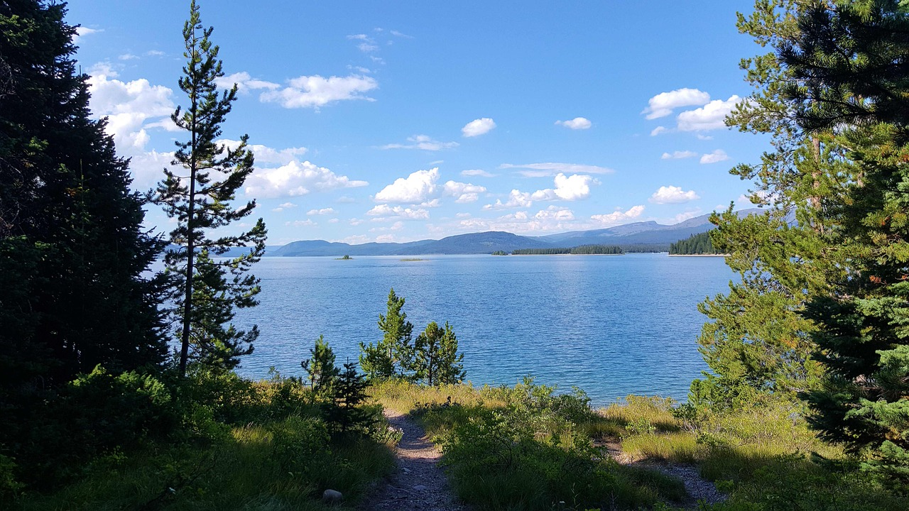

Vá em busa de Aventuras!
As vezes é necessario buscar algo a mais em sua vida, não ficar parado só vendo o tempo passar, é necessario descobrir mais sobre você mesmo, descobrir mais sobre essa criação de Deus que é a terra, não podemos nos da o luxo de viver na monotonia, precisamos aprender mais, conhecer mais, ter novos hobbis, novas oportunidades, precisamos ter aventuras, precisamos de experiências.
É por isso que estamos aqui, para aproveitar a vida uns com os outros, gerar valor na vida das pessoas a nossa volta, conhecer o mundo, acampar, fazer trilhas, pular de paraquedas, curtir a vida. E para curtir a vida precisamos sair da zona de conforto, falar com pessoas desconhecidas, sair sozinho, comer em lugares diferêntes, descobrir o mundo, tudo isso é necessario, tudo isso é ensencial em nossas vidas.
Não olhe para trás
Não se culpe pelo tempo perdido, eu sei que se você tivesse feito escolhas melhores você já teria chegado nos seus sonhos, mas mesmo assim, não deixe isso te derrubar, não olhe para trás querendo voltar, você ainda tem tempo de ser corajoso, você ainda tem tempo de investir nos seus objetivos, então não deixe isso de lado, não deixe seu sonho de lado.

O Agora
O melhor momento em sua vida, para fazer algo é o agora, não deixe para depois algo que você sonha, corra atrás daquilo que você almeja, foque, seja disciplinado, saibar escolher e dizer não para as coisas que te impedem de chegar lá, mas seja sabio, não atropele ninguem para alcançar aquilo que quer, se você tem filhos cuide deles, de seu melhor para eles, mas tambem de um jeito de realizar seus sonhos, peça ajuda a outras pessoas, ou vá sozinho, mas com garra e coragem, só você pode te levar onde você deseja.
Seja um Sonhador
A vida é muito curta, você tem pouco tempo, porque desperdiçar ele? faz o melhor que você tem com aquilo que tem, mas nunca deixe de sonhar, nunca deixe de querer mais, mas tambem seja satisfeito com aquilo que já tem, seja satisfeito com aquilo que você conquistou até hoje!